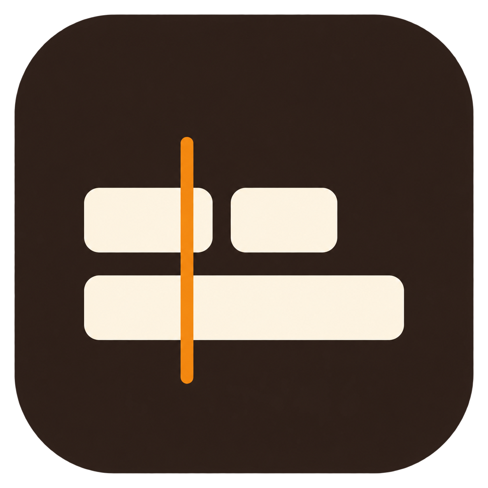

已开放下载
MagicBoard
先把故事，变成可拍的镜头。
拆解文案、规划 A/B-roll、制作 AI 参考图，整理导演审阅稿与拍摄执行表。
让镜头，跟着故事走。3 个镜头
文案
把想法写下来，把每个瞬间拍下来。
镜号画面内容类型
01
面对镜头，讲述想法中近景 · 平视 · 固定
A-roll02
记录拍摄现场近景 · 俯视 · 固定
B-roll03
整理拍摄素材特写 · 平视 · 固定
B-roll镜头规划已整理拍摄执行表
macOS · 分镜规划

MagicResolve在达芬奇里铺设 B-roll从你需要的那一步开始。
选择一款工具，也可以组合使用。
先把故事，变成可拍的镜头。
拆解文案、规划 A/B-roll、制作 AI 参考图，整理导演审阅稿与拍摄执行表。
把想法写下来，把每个瞬间拍下来。
把注意力，留给拍摄现场。
在微信中登记镜号、相机文件名与 Take，记录拍摄状态和现场照片。
近景 · 俯视 · 固定
拍完之后，让素材各就其位。
对齐现场登记与相机素材，精确匹配文件，截取视频第一帧，生成图片回传包。
让分镜，在达芬奇里接着走。
读取 MagicFile 通用 JSON，预览素材匹配，在 A-roll 时间线副本上铺设 B-roll，保留原始时间线与声音。
规划、记录、整理、剪辑。
把上一阶段的成果，带到下一步。
从文案生成分镜，
导出现场拍摄计划。
接收拍摄计划，
在微信里记录现场 Take。
匹配相机素材与现场记录，
把首帧图片带回分镜。
预览匹配结果，
在达芬奇时间线副本上铺设 B-roll。
项目包衔接各阶段，按需导出与导入。MagicResolve 使用已导入媒体池的在线原片。
获取已公开发布的版本。
选择需要的工具，下载对应安装包。
正在读取版本信息…
不需要，按当前的创作任务选择即可。
MagicBoard 负责分镜规划，MagicFile 负责素材匹配，MagicResolve 负责在达芬奇中铺设 B-roll。需要衔接多个环节时，再组合使用。
MagicBoard 和 MagicFile 是在 Mac 本地运行的软件；MagicResolve 是在 DaVinci Resolve Studio 中运行的插件。
官网提供产品介绍与下载，不存储你的项目或相机素材。
目前已验证：Apple 芯片 Mac，DaVinci Resolve Studio 21.1。
使用前，将原片导入当前项目的媒体池，并完成 A-roll 初剪与音频校准。
MagicShot 以微信小程序形式提供，目前内测中待上线。可在下载区使用微信扫描体验版二维码打开；手机端也可保存图片后在微信中识别。此二维码 10 月 9 日前有效。